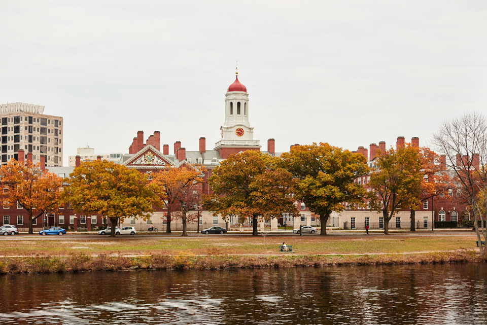

| Day | Description |
|---|---|
Day 1 : Freedom trail

|
The Freedom Trail is a beloved 2.5 mile walk through historic Boston. It leads you through the major sites and monuments relating to the city’s founding and the Revolutionary War.You follow a red brick road, with signs and historical markers along the way.
The trail begins in the Boston Common, the nation’s oldest park, and ends at Bunker Hill.
Along the way, you’ll visit 16 historic Boston landmarks: 1. Boston Common, 2. Massachusetts State House, 3. Park Street Church, 4. Granary Burying Ground, 5. King’s Chapel Burying Ground, 6. Benjamin Franklin statue,
7. Old Corner Bookstore, 8. Old South Meeting House, 9. Old State House, 10. Site of the Boston Massacre, 11. Faneuil Hall, 12. Paul Revere House, 13. Old North Church, 14. Copp’s Hill Burying Ground, 15. USS Constitution, 16. Bunker Hill Monument.
|
Day 2: Boston’s Neighborhoods

|
1. Fenway: Fenway is known for its iconic ballpark. Fenway is home to some of the city’s best museums, music venues, and eateries.
2. Back Bay: Boston’s Back Bay is New England’s version of New York’s SoHo and West Village. And Newbury Street is the equivalent of Madison Avenue. On Newbury, you’ll find lots of expensive shopping and high end eateries. You’ll want to stroll down Beacon, Marlborough, Commonwealth, Newbury, and Boylston streets.
3. Copley Square: Next, head to Copley Square, a pretty public square in the Back Bay formerly known as the Art Square. The style is known as Richardsonian Romanesque, which embraces the use of clay roofing and rough hewn stonework. Upon its completion, the church’s distinctive style influenced architects across the country because it was so beautiful.
|
| Day 3: Cambridge  |
1. Harvard University: Founded in 1636, Harvard is the oldest university in America. Head to its home in Cambridge. Ranged around the statue are tree lined footpaths, trim lawns, scholarly libraries, and elegant Georgian and Federal architecture.
2. Beacon Hill: It’s an extremely pretty and exclusive neighborhood of gaslit streets and brick sidewalks. The homes, many designed by the ubiquitous Bulfinch, were built for Boston’s Protestant merchant elite, known as the Boston Brahmins.
Start your tour of Beacon Hill at Louisberg Square. The smart bow front homes date from the 1830s.
3. North End: After exploring Beacon Hill, head to Boston’s historic North End. This neighborhood is the heart of Boston’s Italian community. The first Italians to arrive were Genoese in the 1860s. The North End is home to one of Boston’s quirky landmarks, the Skinny House on Hull Street. It’s only 10 feet wide. Legend holds that it was built out of spite, to block sunlight from the house behind it.
|